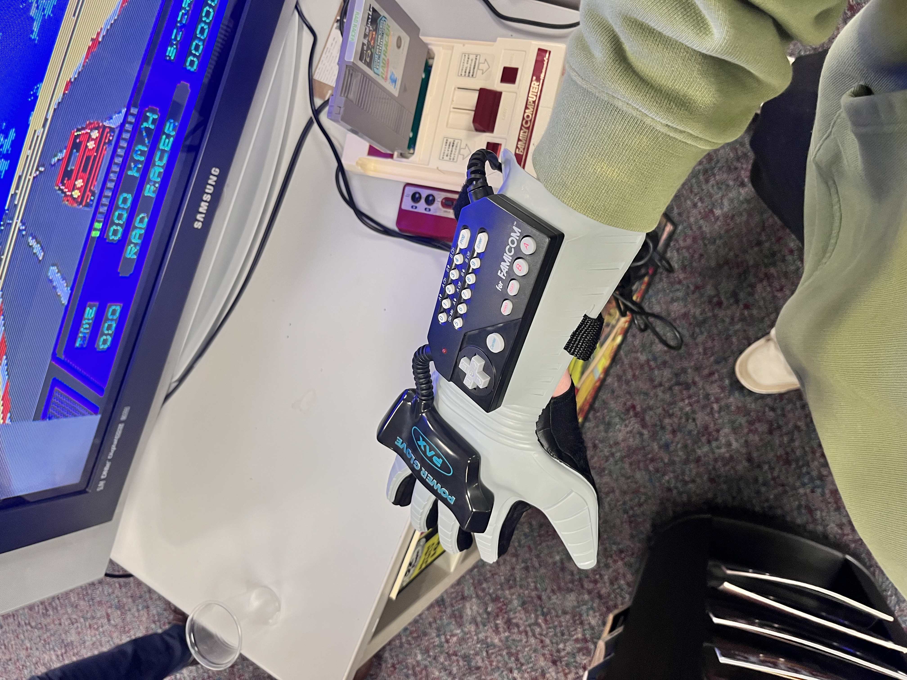
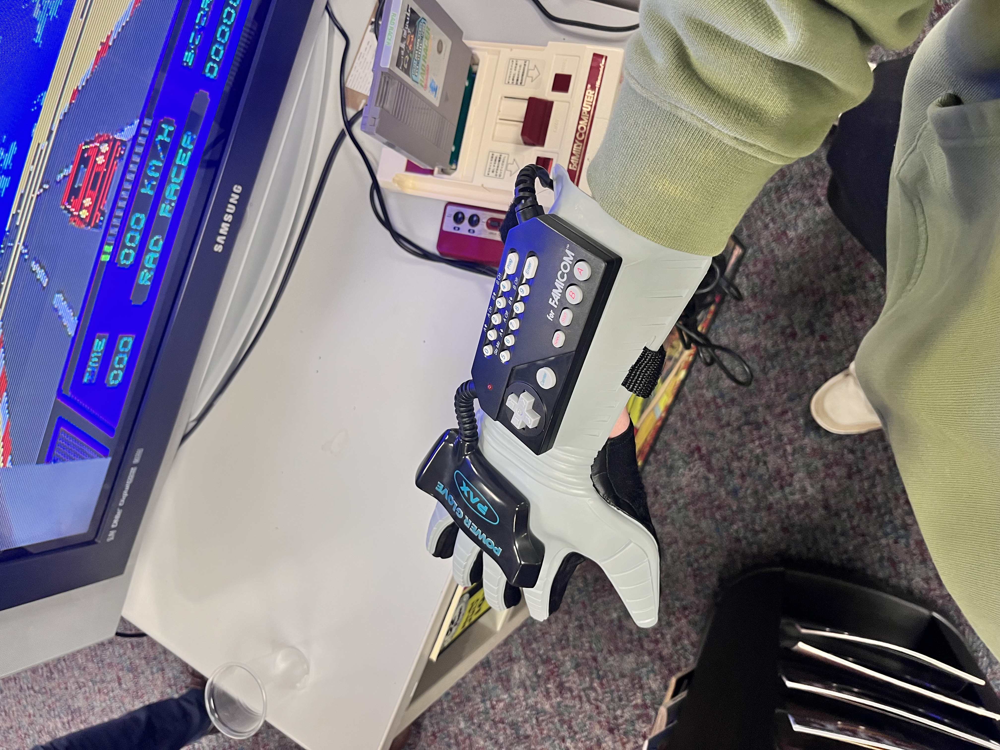

Galway
On the first day of our trip, we woke up and got on the bus to start the beautiful but long drive over to Galway. We still got there pretty early in the day, and we had a chance to explore the city. After that, we got back on the bus and went to the Computer Museum, where there was this little room with every retro computer. We got a tour and rundown of how programming and commuting started, and then we got to try all kinds of things like arcade cabinets and video game consoles. After the museum, we got to see the city some more and then we went to a fish and chips place that I did not like.
Pics from Galway
 
